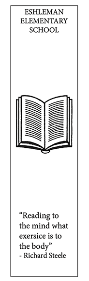

Ava Adiletti's Bookmark Project |
||
| Home Photo Project Bookmark Infographic | ||
|
 |
For the bookmark project, we were tasked with designing a bookmark for Eshleman Elementary School. We created these bookmarks using indesign by placing the images in a rectangular box. Once our bookmark was created we printed them out and used a machine to cut the bookmarks. |
|
|
© 2025 Ava Adiletti | ||